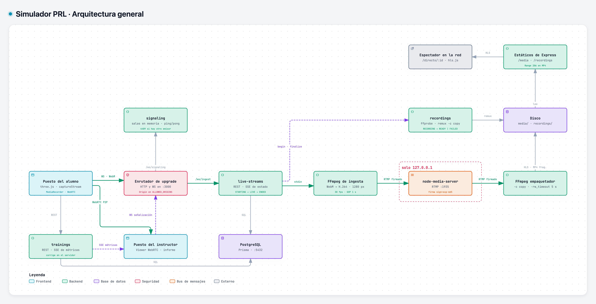
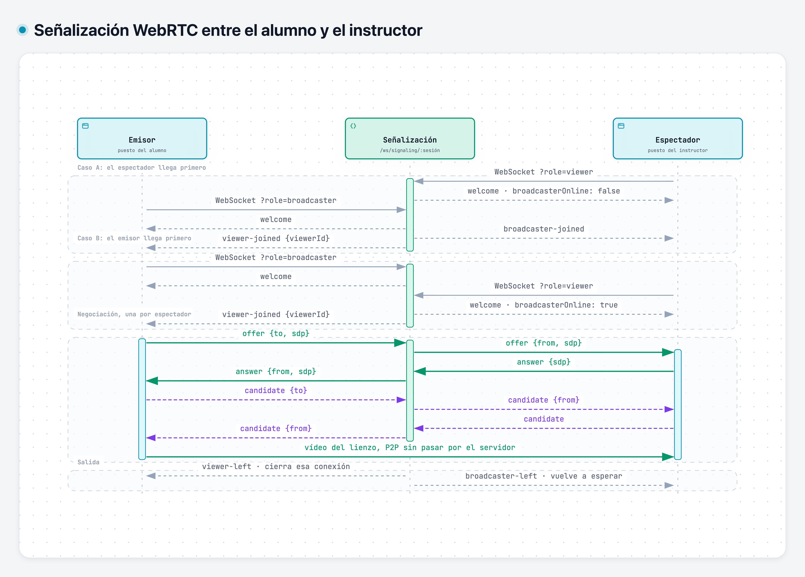
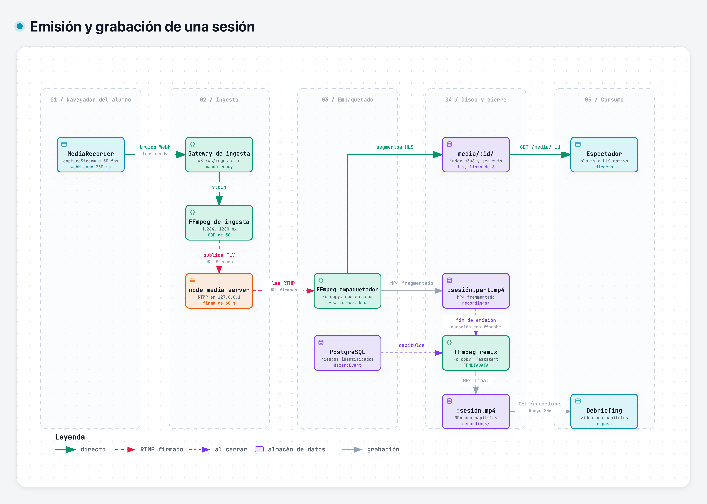
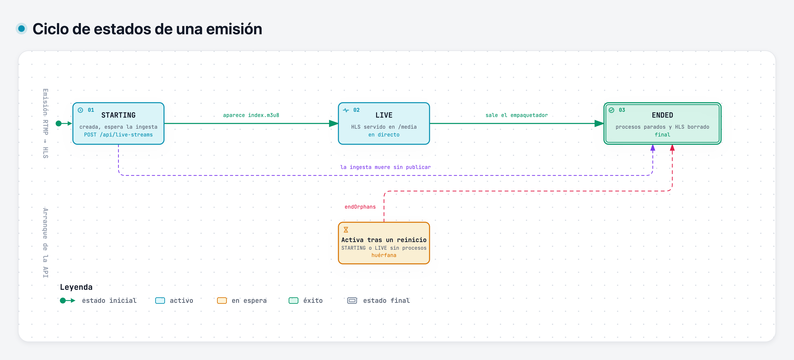
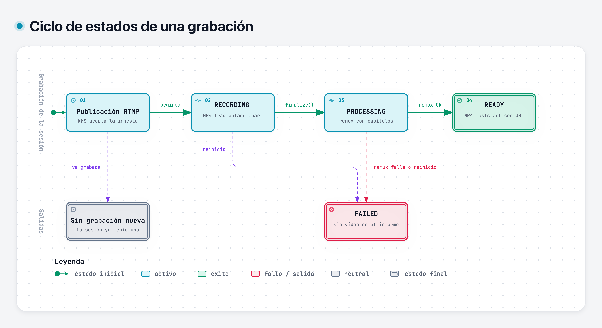

Simulador PRL
Diagramas interactivos de la arquitectura. En cada uno se puede seguir una ruta, aislar un componente con lo que depende de él y abrir las fichas con el detalle.
-

Arquitectura general
Navegador, API, procesos de vídeo y persistencia.
-

Señalización WebRTC
Mensajes entre el emisor, el servidor y el espectador.
-

Emisión y grabación
Del lienzo al directo HLS y al MP4 con capítulos.
-

Estados de una emisión
STARTING, LIVE y ENDED.
-

Estados de una grabación
RECORDING, PROCESSING, READY y FAILED.